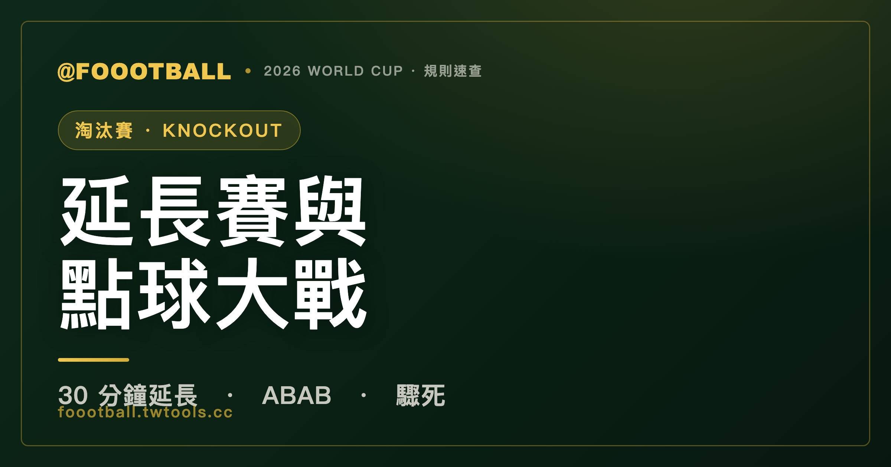

淘汰賽踢平怎麼辦？世界盃延長賽與點球大戰規則完整解析
世界盃淘汰賽（32 強起）一定要分出勝負。90 分鐘踢平，先踢 30 分鐘延長賽（兩個 15 分鐘，沒有黃金進球，踢滿為止）；延長賽仍平手，進入點球大戰：雙方各派 5 人以 ABAB 順序輪流主罰，5 輪後仍平則進入『驟死』，一輪定生死。

小組賽可以接受平手，但淘汰賽（2026 從 32 強開始）一定要分出勝負，輸的人回家。當 90 分鐘結束雙方還是平手，接下來會走一套固定流程：先延長賽，再點球大戰。這篇把每一步、每個容易搞混的細節講清楚。
第一步：30 分鐘延長賽
90 分鐘（含傷停補時）踢完仍平手，進入延長賽（extra time）：
- 分成兩段、各 15 分鐘，共 30 分鐘，中間短暫換邊
- 沒有「黃金進球」：就算有一隊先進球，比賽也不會立刻結束，會把該半段踢完
- 兩段 30 分鐘踢完，比的是這 120 分鐘的總比分
要特別澄清一個常見誤解：現行規則沒有「先進球就結束」的黃金進球（golden goal）或銀球制。那是 1990 年代末到 2000 年代初的舊制，早已廢除。延長賽就是老老實實踢滿 30 分鐘。
第二步：點球大戰
延長賽 120 分鐘仍分不出勝負，進入點球大戰（penalty shootout）。流程如下：
- 擲硬幣兩次：第一次擲幣決定在「哪一邊球門」踢點球（若有安全、場地因素，裁判可直接指定）；第二次擲幣，由贏的一隊選擇先罰或後罰
- 各派 5 人：雙方各指定 5 名球員主罰
- ABAB 輪流：A 隊罰一球、B 隊罰一球、A 隊再罰……交替進行，不是一隊連罰 5 球
- 5 輪定大部分勝負：5 輪結束領先者勝；若其中一隊已經贏到對方追不上，會提前結束
| 項目 | 規則 |
|---|---|
| 球門方向 | 第一次擲幣決定（特殊情況由裁判指定） |
| 先後順序 | 第二次擲幣，贏方選先罰或後罰 |
| 主罰人數 | 各 5 人 |
| 輪踢方式 | ABAB 交替 |
| 5 輪後平手 | 進入驟死 |
關於輪踢順序：FIFA 曾在部分賽事試驗過 ABBA（類似網球破發局，讓後罰方少吃點心理壓力），但沒有正式採用，世界盃用的是傳統的 ABAB。
第三步：驟死（Sudden Death）
5 輪罰完還是平手，進入驟死：
- 雙方每輪各罰 1 球，一樣交替
- 哪一輪出現「一隊進、另一隊沒進」，比賽立刻結束
- 一直踢到分出勝負為止
兩個容易搞混的細節
誰能罰點球？ 原則上只有延長賽結束時仍在場上的球員有資格主罰；因受傷處理、調整裝備等原因「暫時離場」的球員仍可參加。已經被換下場或被紅牌罰下的球員不能踢（另有一個例外：若門將在點球大戰期間受傷無法繼續，可依規定替換）。所以教練在延長賽末段的換人，常常會把點球高手留在場上。
每人都要先罰過才能罰第二次。 在驟死階段，球隊所有有資格的球員（包含守門員）都必須各罰過一球之後，才能有人踢第二輪。也就是說，如果驟死拖很長，連門將都得上去罰一球。
一句話總結
90 分鐘平手 → 30 分鐘延長賽（無黃金進球，踢滿）→ 仍平手就點球大戰（各 5 人、ABAB、兩次擲幣決定球門與先後）→ 5 輪後平手進驟死，一輪定生死。只有終場哨響時在場上的球員能罰。
常見問題
世界盃淘汰賽踢平會怎樣？
進入 30 分鐘延長賽（分兩段、各 15 分鐘）。延長賽仍平手，再踢點球大戰，直到分出勝負。淘汰賽不接受平手收場。
延長賽有「黃金進球」嗎？先進球就贏嗎？
沒有。現行規則沒有黃金進球或銀球制，那是早已廢除的舊制。延長賽兩段共 30 分鐘會踢滿，就算中途有人進球也會把該半段踢完。
點球大戰每隊罰幾個人？順序怎麼排？
各派 5 人，以 ABAB 順序交替主罰。開始前裁判會擲兩次硬幣：第一次決定在哪一邊球門踢，第二次由贏的一隊選擇先罰還是後罰。5 輪後若仍平手，進入驟死。
點球大戰 5 輪後還是平手怎麼辦？
進入驟死：雙方每輪各罰 1 球，一旦出現「一隊進、一隊沒進」就分勝負。會一直踢到分出高下，所有球員（含守門員）都要先各罰過一球，才能有人罰第二次。
哪些球員可以罰點球？
原則上只有延長賽結束時仍在場上的球員有資格；因受傷、調整裝備等暫時離場的球員仍可參加，門將受傷無法繼續時也可依規定替換。被換下或被罰下的球員不能踢——這也是教練常把點球好手留到最後的原因。
資料來源：FIFA 競賽規則、IFAB 足球規則（Laws of the Game）延長賽與點球大戰條文。本站為非官方球迷資訊整理。延伸閱讀：2026 世界盃賽制全解。